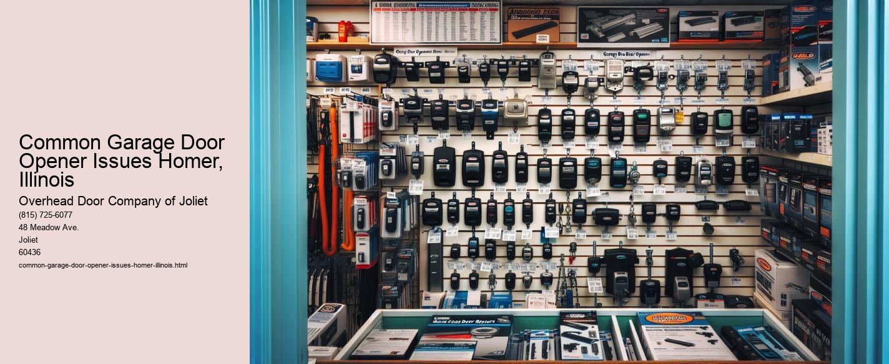

Serving Joliet, IL and surrounding Will County communities including:
Authorized Dealer for Overhead Door™ Openers and Accessories.

Common Garage Door Opener Issues in Homer, Illinois
Introduction
Garage door openers have become an integral part of modern living, providing convenience and security to homeowners. However, like any mechanical device, they are not immune to issues and malfunctions. For residents of Homer, Illinois, understanding common garage door opener problems can save both time and money, and ensure the safety and efficiency of their door systems. This essay explores some frequent issues homeowners in Homer might encounter with their garage door openers and offers practical solutions.
One of the most common issues faced by homeowners is the malfunctioning of the garage door opener remote. This problem can arise from several factors, including depleted batteries, signal interference, or a need for reprogramming. To troubleshoot, homeowners should first replace the remote batteries with new ones, ensuring they are inserted correctly. If the problem persists, interference from nearby electronic devices or structural obstructions may be the cause. In such cases, repositioning the garage door opener antenna or reprogramming the remote may be necessary.
Another frequent issue is when the garage door does not open or close fully. This can be particularly inconvenient, leaving the garage vulnerable to weather elements or unauthorized access. Misaligned sensors, obstructions in the doors path, or problems with the garage door opener limit settings often cause this issue. Homeowners should first check for any visible obstructions or debris along the door's tracks and remove them. If the problem persists, inspecting and realigning the sensors or adjusting the limit settings on the opener may resolve the issue.
A noisy garage door can be a nuisance, especially in quiet neighborhoods like Homer. This problem is usually caused by worn-out rollers, lack of lubrication, or loose hardware.
If a garage door starts to close but then reverses direction, it could indicate a problem with the safety sensors or the opener's force settings. In Homer, where safety is a priority, this issue can be particularly concerning. Homeowners should ensure the safety sensors are properly aligned and free of dirt and debris. Additionally, adjusting the force settings on the opener to ensure the door closes with the appropriate amount of force can prevent unnecessary reversals.
Sometimes, homeowners might experience a situation where the garage door opener motor runs, but the door doesn't move. This can be caused by a disengaged trolley or a broken belt or chain.
Conclusion
In Homer, Illinois, homeowners rely on garage door openers for convenience and security. Understanding common garage door opener issues and their solutions can help residents maintain their systems effectively, prevent costly repairs, and ensure safety. Regular maintenance, timely repairs, and knowing when to call a professional can keep garage door openers functioning optimally, providing peace of mind to Homer's residents.
Garage Door Repair Services Homer, Illinois